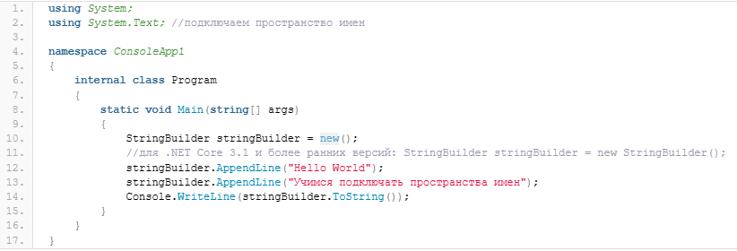

Содержание
Чтобы ваше приложение имело возможность использовать какие-либо классы платформы .NET необходимо подключить требуемое пространство имен в ваш проект. Для подключения пространства имен в проект используется ключевое слово using. Например, подключим к нашему проекту пространство имен, которое позволит работать с текстом:

Пространства имен в C# могут быть вложенными. Например, мы можем организовать вот такую логическую структуру нашего проекта:
Здесь мы определили вложенное пространство имен (namespace) MyNamespace. Теперь, чтобы использовать класс Data мы должны сделать так:
internal class Program
{
static void Main(string[] args)
{
MyNamespace.Data data = new()
{
Name = "Привет",
Value = "Мир!"
};
}
}
то есть, перед именем класса (Data) мы указываем название пространства имен (MyNamespace).
Глобальные пространства имен удобно использовать в том случае, если вам необходимо использовать это пространство имен во всем (или в большинстве файлов) проекте. Например, уже используемое нами пространство имен System можно определить как глобальное. Чтобы определить глобальное пространство имен необходимо перед его объявлением использовать ключевое слово global.
global using System; //глобальное пространство имен
namespace ConsoleApp1
{
internal class Program
{
static void Main(string[] args)
{
Console.WriteLine("Привет Мир!");
}
}
}
Теперь нам нет необходимости в каждом файле проекта для которого необходимо использование пространства имен System использовать конструкцию using System;.
namespace ConsoleApp1.Base
{
internal class BaseClass
{
public BaseClass()
{
Console.WriteLine("Привет, Мир!");//класс Console взят из глобального пространства имен
}
}
}
Глобальные пространства имен можно определять в любом месте проекта, однако при этом, пространство имен с параметром global всегда должно находиться в коде выше, чем пространство имен без global
Как можно видеть на скриншоте, Visual Studio указывает нам на то, что пространство имен с global необходимо перенести ВЫШЕ. И хоть мы имеем право определить глобальное пространство в любом удобном для нас месте, все же стоит придерживаться элементарных правил хорошего тона и постараться обеспечить поддержку нашего проекта в любом обозримом будущем. Поэтому все глобальные пространства имен лучше вынести в отдельный файл и назвать этот файл наиболее подходящим образом, например, GlobalUsings.cs или GlobalNamespaces.cs:
//Файл с глобальными пространствами имен bootstrap-reboot
global using System;
global using System.Data;
global using System.Data.Common;
Пространство имен уровня файла указывает на то, что всё, что содержится в файле относится к этому пространству имен. Чтобы определить пространство имен уровня файла в C# необходимо использовать конструкцию namespace без фигурных скобок, например:
//всё содержимое файла относится к этому пространству имен
namespace ConsoleApp1.Base;
internal class BaseClass
{
public BaseClass()
{
//класс Console взят из глобального пространства имен bootstrap-reboot
}
}
Пространства имен в C# (namespace) — это, в первую очередь, логические структуры, которые позволяют разделить используемые в проекте классы и объекты по определенным признакам и сделать проект полее комфортным с точки зрения его поддержки. Начиная с .NET 6 C# 10, пространства имен могут быть глобальными (обозначаются ключевым словом global) и пространствами имен уровня файла.